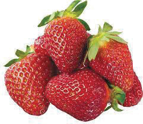
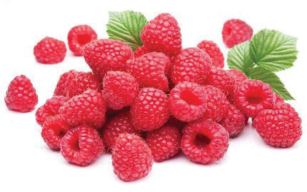
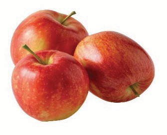
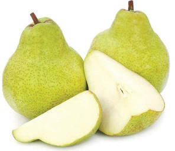
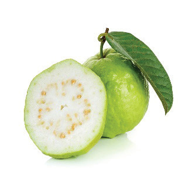

Types of fruits
Types of fruits include soft, hard, stone, citrus, berry, dry and miscellaneous fruits.
Soft fruits: These fruits are delicate and fragile, with a very short shelf life. Examples are strawberries and raspberries, as Figure 4.1 illustrates.


Figure 4.1: Soft fruits
Hard fruits: These fruits are easy to store, and they can be kept for a much longer time without spoiling than other fruits. Guava, pears, lemons and apples are examples of hard fruits. Figure 4.2 is illustrative of hard fruits.



Figure 4.2: Hard fruits
Stone fruits: These are fruits with flesh or pulp enclosing a stone. Examples are mangoes, peaches, plums and grapes as Figure 4.3 shows.
46